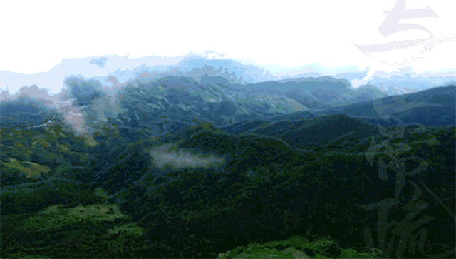

近年来，随着古树茶渐渐被世人所熟知，来自云南原始雨林的那些珍稀野茶更是受到不少茶友追捧。不难发现，一股“野茶风”正在茶行业中“蔓延”，而且野茶的价格也相当高。
尽管“野茶”并未成为茶行业的一股热流，也并未拥有一个庞大的商客群体，但因其稀缺珍贵以及超高的品饮价值被越来越多的“发烧友”争相追捧。因此吸引不少商家和茶友寻找野茶，甚至跋山涉水亲自到云南寻找，只为它那“霸气”、让人如痴如醉、欲罢不能的味道！
那么，我们不妨透过【雨林·红天王】来了解一下何为“野茶”！
雨林野茶新力作
雨林古茶坊作为在茶行业中首个推出“野茶”的企业，自2013年推出【野茶·腾蛟起凤】，便“掳获”了一批又一批雨林野茶粉。
近日，雨林在新品计划中，全新推出【雨林野茶系列】之【四大天王·红天王】！听说，这是继【2016腾蛟起凤】后，又一雨林野茶力作！
原始本真，野性十足
雨林野茶
四大天王·红天王
什么是野茶？
野茶——全名人工栽培型野茶，树种为人工栽培型大叶种茶树，非人为播种，生长于生态极好的荒野，人迹罕至，其定义应为：人工栽培型，非人为播种以及完全脱离人为管护的生态古树茶。
野茶在云南地区分布极少，以棵计算野茶树的数量也不为过。

勐海县野茶，全部长在深山，只有祖祖辈辈居住在当地的少数民族清楚知道它的分布。野茶的发现，对于丰富古茶树种类、了解古茶树生长环境以及提升古树茶品鉴新高度都有不可估量的意义。

为什么会有野茶？
野茶生长地有几个共同特征：
1
生长地有斜坡、有幽谷、有险峰，茶树周围森林密布常常无立足之地，绝不是人为精心挑选的播种地。
2
发现野茶的地方辐射四周4-5公里必定有古茶园及村寨，这是一个微妙的距离，如果是人为种植那么村民不会选择距离寨子那么远的地方，既不方便采摘也不方便及时加工，但是如果超出太远那么其落地生根的种子从何而来。
3
更为重要的是，野茶都是少量存在，或三五成群或十来棵共生，目前未发现任何成片存在的野茶，如果是人工种植那么应该呈现或大或小的古茶园群落。
因此可以初步得出结论：
野茶是自然播种的结果，或为动物的啃噬与搬运，或为山风与流水的运载，大自然将附近寨子里茶树的茶果“搬运”到了深山，茶果在土壤肥沃、生态优良的环境下萌发生长。
野茶有什么特点？
野茶与人工栽培型的古茶树（以下简称古茶树）是同品种，区别在于野茶是自然播种、自然生长，长期脱离人为养护的产物。
野茶生长环境更优良，汲取的营养更丰富，生长更为缓慢，内涵物质更多，野茶的品饮价值与养生价值都极高。


野茶鲜叶
芽叶异样的修长、肥嫩
叶背绒毛浓密
具有非常高的辨识度


左边是古树鲜叶，右边是野茶鲜叶

野茶晒青毛茶
同时，自然茶籽落地而生的乔木古茶树，与人工茶籽或迁插密植后弃荒的野放茶不同。野茶生长于生态极好的荒野，长期与世隔绝，完全脱离人为管护，没经过多次采摘，内涵物质更丰厚，口感更为浓烈，更具穿透力。

四大天王 · 红天王
每一口都挑战我们的味蕾……
欢迎来挑战！
注：
·关于野茶的定义为雨林古茶坊定义，最终解释权归雨林古茶坊所有；
·文中所有图片均来源于雨林古茶坊公众号，转载请注明出处。